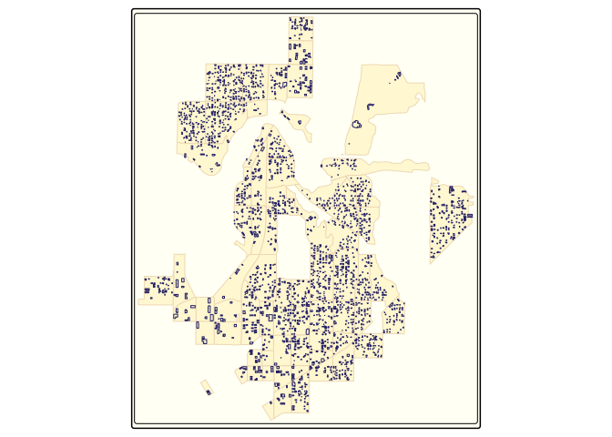
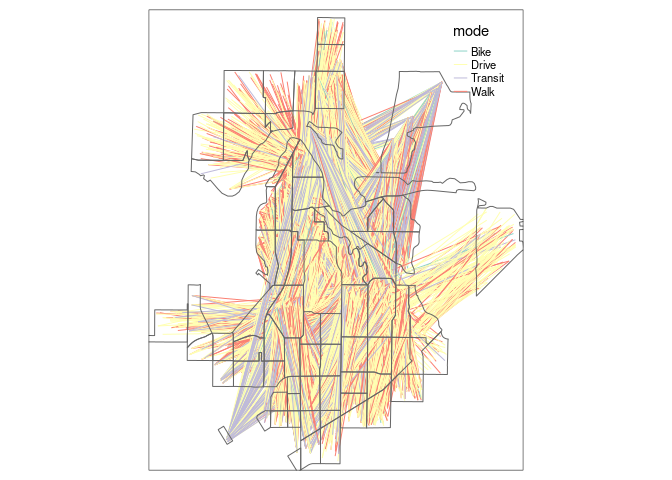

The goal of abstr is to provide an R interface to the A/B Street transport planning/simulation game. Currently it provides a way to convert aggregated origin-destination data, combined with data on buildings representing origin and destination locations, into .json files that can be directly imported into the A/B Street game. See the formats page in the A/B Street documentation for details of the schema that the package outputs.
Installation
You can install the released version of abstr from GitHub as follows:
remotes::install_github("a-b-street/abstr")Example
The example below shows how abstr can be used. The input datasets include sf objects representing buildings, origin-destination (OD) data represented as desire lines and administrative zones representing the areas within which trips in the desire lines start and end. With the exception of OD data, each of the input datasets is readily available for most cities. The input datasets are illustrated in the plots below, which show example data shipped in the package, taken from the Seattle, U.S.
library(abstr)
library(tmap) # for map making
tm_shape(montlake_zones) + tm_polygons(col = "grey") +
tm_shape(montlake_buildings) + tm_polygons(col = "blue")
The map above is a graphical representation of the Montlake residential neighborhood in central Seattle, Washington. Here, montlake_zones represents neighborhood residential zones declared by Seattle local government and montlake_buildings being the accumulation of buildings listed in OpenStreetMap
The final piece of the abstr puzzle is OD data.
head(montlake_od)
#> # A tibble: 6 × 6
#> o_id d_id Drive Transit Bike Walk
#> <dbl> <dbl> <int> <int> <int> <int>
#> 1 281 361 23 1 2 14
#> 2 282 361 37 4 0 11
#> 3 282 369 14 3 0 8
#> 4 301 361 27 4 3 15
#> 5 301 368 6 2 1 16
#> 6 301 369 14 2 0 13In this example, the first two columns correspond to the origin and destination zones in Montlake, with the subsequent columns representing the transport mode share between these zones.
Let’s combine each of the elements outlined above, the zone, building and OD data. We do this using the ab_scenario() function in the abstr package, which generates a data frame representing tavel between the montlake_buildings. While the OD data contains information on origin and destination zone, ab_scenario() ‘disaggregates’ the data and randomly selects building within each origin and destination zone to simulate travel at the individual level, as illustrated in the chunk below which uses only a sample of the montlake_od data, showing travel between three pairs of zones, to illustrate the process:
set.seed(42)
montlake_od_minimal = montlake_od[sample(nrow(montlake_od), size = 3), ]
output_sf = ab_scenario(
od = montlake_od_minimal,
zones = montlake_zones,
zones_d = NULL,
origin_buildings = montlake_buildings,
destination_buildings = montlake_buildings,
pop_var = 3,
time_fun = ab_time_normal,
output = "sf",
modes = c("Walk", "Bike", "Drive", "Transit")
)The output_sf object created above can be further transformed to match A/B Street’s schema and visualised in A/B Street, or visualised in R (using the tmap package in the code chunk below):
tm_shape(output_sf) + tmap::tm_lines(col = "mode") +
tm_shape(montlake_zones) + tmap::tm_borders()
Each line in the plot above represents a single trip, with the color representing each transport mode. Moreover, each trip is configured with an associated departure time, that can be represented in A/B Street.
The ab_save and ab_json functions conclude the abstr workflow by outputting a local JSON file, matching the A/B Street’s schema.
output_json = ab_json(output_sf, time_fun = ab_time_normal, scenario_name = "Montlake Example")
ab_save(output_json, f = "montlake_scenarios.json")Let’s see what is in the file:
file.edit("ab_scenario.json")The first trip schedule should look something like this, matching A/B Street’s schema.
Next steps
For a more comprehensive guide in the art of collecting, transforming and saving data for A/B Street, check out the abstr documentation.
Todo: add link to ‘getting started’ and delete this message when done.